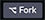

Qu'est-ce qu'une page web ?
Une page web est un document numérique qui permet d'afficher du texte, des images et des contenus média variés.
La structure du contenu de la page web est assurée par un document HTML.
Le rendu visuel de la page web est pris en charge par un navigateur web graphique, en fonction des informations de mise en forme inscrites dans la feuille de style, ou CSS.
HTML pour la structure
C'est le langage HTML qui permet d'élaborer la structure du contenu d'une page web.
HTML signifie Hypertext Markup Language, ou « langage de balisage hypertexte » en français.
Il s'agit d'un langage créé et utilisé pour rédiger les pages web en recourant au principe du balisage.
Le balisage sert à donner un sens au contenu de la page web.
HTML n'est pas un langage de programmation à proprement parlé mais bien un langage de balisage, car il n'utilise pas de variables et ne permet pas de décrire une action à exécuter.
Que vous utilisiez un éditeur de texte simple (par exemple, TextEdit sur MacOS) ou un éditeur HTML dédié, un document HTML n'est rien de plus qu'un simple document texte.
CSS pour la mise en forme
CSS signifie Cascading Style Sheet ou, en français, « feuille de style en cascade ».
Au document HTML s'adjoint une feuille de style - ou CSS - qui contient les règles de style, c'est-à-dire les informations de mise en forme.
Ce sont les règles de style qui permettent de positionner les éléments de contenu de la page. Autrement dit, pour un même contenu, la mise en forme peut varier du tout au tout, comme le montre le site des Jardins Zen .
Nous reviendrons bientôt au langage CSS.
Voyons d'abord les bases du langage HTML.
Balises HTML
Le langage HTML :
- sert à structurer le contenu d'une page web;
- sert à donner du sens au contenu d'une page web;
- repose sur l'utilisation de balises.
Voici comment est écrit un paragraphe en langage HTML :
Code
<p>HTML repose sur l'utilisation de balises.</p>
Les régles d'écriture des balises
Les balises sont délimitées par des chevrons ouvrant (<) et fermant (>).
Les balises fonctionnent par paires (mais il y a des exceptions), soit une balise ouvrante (<p>) et une balise fermante (</p>).
Ces paires délimitent la portion de texte à laquelle elles s'appliquent.
Balises vides
Parfois, une balise est refermée immédiatement et ne forme pas de paire: c'est une balise dite «vide». Elle délimite alors un point et non une zone du document. Par exemple, la balise <br> , qui commande un changement de ligne, ou encore la balise <img>, qui commande l'affichage d'une image, sont des balises vides.
Syntaxe
Le nom des balises s'écrit tout en minuscules. Par exemple, <strong>...</strong> est la façon correcte d'écrire cette balise.
Le langage HTML est permissif quant à la syntaxe utilisée. En conséquence, il existe plusieurs façons valides de rédiger une balise. Par exemple, on peut aussi bien écrire <p> ...</p> ou <P>...</P>, ou encore <br>, <br /> ou <BR>. Chacune de ces formes est valide. Cependant, les bonnes pratiques en matière d'intégration commandent avant tout l'uniformité dans la rédaction du code. C'est pourquoi les conventions d'écriture énumérées ici, bien qu'elles ne soient pas les seules valides, seront néanmoins imposées dans le cadre des travaux réalisés durant la session.
Les éléments
Un élément est l'ensemble composé :
- d'une balise ouvrante,
- d'un contenu et
- de la balise fermante correspondante.
L'exemple de balisage qui suit fait intervenir l'élément <strong> qui permet de souligner l'importance d'une partie du texte :
Code
<p>HTML est un <strong>langage de balisage</strong> et non pas un langage de programmation.</p>
Résultat
HTML est un langage de balisage et non pas un langage de programmation.
Travail formatif 1
- Rendez-vous sur le site de Codepen et créez un compte.
- Assurez-vous d'être enregistré·e (Log in) avant de continuer.
- Maintenant, expérimentez le balisage dans la fenêtre de code ci-dessous : il suffit d'insérez le curseur de la souris dans le code HTML (à gauche) pour le modifier et d'en constater le résultat à l'affichage (à droite).
- Ensuite, cliquez sur « Fork on Codepen » pour ouvrir une nouvelle fenêtre et travailler plus librement. L'opération Fork signifie que vous pouvez sauvegarder une version du travail dans votre compte Codepen et la conserver pour référence.
- Une fois dans la fenêtre de Codepen, cliquez sur le bouton Fork  au bas de la fenêtre pour sauvegarder ce « pen » dans votre collection, et renommez-le au besoin.
See the Pen c01-html01 by Frédéric Lacroix (@frlacroix) on CodePen.
Dans cet exemple, nous distinguons :
- l'élément :
<strong>langage de balisage</strong> - le contenu de l'élément :
langage de balisage - la balise ouvrante :
<strong> - la balise fermante :
</strong>
Le contenu « langage de balisage » sera renforcé par rapport au reste du texte à l'aide d'une police plus grasse par le moteur de rendu des navigateurs graphiques.
Voyons maintenant comment on peut caractériser une balise par un attribut.
Les attributs
Plusieurs balises peuvent être personnalisées par des attributs.
Les attributs sont caractérisés par une valeur.
Les règles d'écriture
La valeur des attributs est insérée à l'intérieur d'apostrophes doubles: " ".
La valeur des attributs peut être écrite de différentes manières, selon la nature de l'attribut:
- plusieurs attributs ont des valeurs prescrites qui doivent être choisies à partir d'une liste de valeurs déterminées à l'avance, comme les attributs
lang,type, etc.; - les attributs globaux comme
classetidqui sont utilisés pour générer des actions par la programmation ou pour créer un effet de mie en forme par les CSS doivent avoir des valeurs sans caractères spéciaux ni espaces, et qui ne doivent pas débuter par un chiffre; - certains attributs comme
altoutitlepeuvent contenir des espaces et des caractères spéciaux, et les attributs qui appellent des adresses URL (href,src, etc.) peuvent contenir tous les caractères servant à composer ces adresses.
Exemple 1
<section lang="fr"> ... </section>
Cet exemple présente :
- un élément
sectiondélimité par les balises HTML, - un attribut
langqui personnalise cet élément ; - une valeur
frqui caractérise cet attribut.
Les différentes valeurs qu'un attribut lang peut prendre sont prescrites; dans ce cas, cet attribut sert à indiquer la langue principale utilisée dans la section et ses valeurs peuvent prendre les valeurs suivantes: fr pour français, en pour anglais ou encore es pour espagnol, par exemple.
Exemple 2
<small class="copyright">© 2022 Sylvain Lamoureux</small>
Cet exemple présente un élément délimité par les balises small, caractérisé par un attribut class prenant la valeur copyright.
La valeur d'un attribut class ou id ne peut avoir ni espaces ni caractères spéciaux, ni débuter par un chiffre.
Exemple 3
<img src="https://monsite.com/images/elephants.webp" alt="Des éléphants marchent dans la brousse.">
Cet exemple présente un élément img caractérisée par un attribut src prenant la valeur "https..." et par un attribut alt prenant la valeur "Des éléphants...".
Travail formatif 2
Dans le code HTML de l'exemple suivant, remplacez l'adresse de l'image par l'adresse d'une image de votre choix de votre choix que vous trouverez sur un site web :
See the Pen c01- html02 by Frédéric Lacroix (@frlacroix) on CodePen.
Notez qu'un attribut tel que alt peut avoir des valeurs comprenant des espaces, des chiffres et des caractères spéciaux.
Observez bien l'exemple précédent: l'élément img contient deux attributs, soit src et alt. Un élément peut donc inclure plusieurs attributs lorsque nécessaire, chacun de ces attributs étant séparé par une espace.
L'imbrication des éléments
Les éléments peuvent être imbriqués.
Une simple page Web contient typiquement un grand nombre d'imbrications d'éléments.
Les règles d'écriture
Les balises des éléments imbriqués ne doivent pas se chevaucher.
Voici un exemple simple d'imbrication :
<h1>Les bases du <abbr title="HyperText Markup Language">HTML</abbr>: l'imbrication des éléments</h1>
Dans cet exemple:
- l'élément
abbrest imbriqué à l'intérieur de l'élémenth1; - l'élément
abbrdoit donc absolument se refermer avant que l'élémenth1ne se referme.
C'est comme si un élément HTML était une boîte qui peut contenir une autre boîte ou être contenu dans une autre boîte.
Une autre façon de visualiser le HTML est justement de l'afficher sous forme de boîtes imbriquées. Ce type d'affichage s'appelle le « modèle du document »:
L'imbrication est omniprésente dans les pages Web
L'imbrication est incontournable dans la structure de base de la moindre page Web.
Travail formatif 2
Créez un dossier à l'endroit qui vous convient sur votre ordinateur et nommez-le en indiquant votre groupe, votre nom de famille, l'initiale de votre prénom et l'identication du travail, comme ceci: gr1_tremblayp_ex1 ou gr2_tremblayp_ex1 (en substituant tremblayp pour votre nom de famille et l'initiale de votre prénom).
- Installez Visual Studio Code sur votre portable (Télécharger Visual Studio Code : cliquez sur Other plateforms pour la version Windows)
- Installez le navigateur Google Chrome sur votre portable (Télécharger Google Chrome (voir le lien en bas de page pour Autres plates-formes au besoin))
- Ouvrez le logiciel Visual Studio Code qui devrait être situé dans le dossier Applications de votre ordinateur ;
- À partir du menu Fichier, choisissez Ouvrir... ;
- Atteignez le dossier que vous venez de créer et ouvrez-le ;
- À Partir du menu Fichier, choisissez Nouveau fichier afin de créez un nouveau fichier HTML.
- Sélectionnez le menu Fichier/Enregistrer... et nommez le fichier monarticle.html ; ce fichier sera inséré automatiquement dans le dossier précédemment créé ;
- Assurez-vous que le fichier monarticle.html est sélectionné dans la colonne de gauche de Visual Studio Code ;
- Inscrivez du texte dans la fenêtre, à droite, sur la ligne numéroté «1».
- Visualisez le résultat dans le navigateur Chrome: pour cela, il suffit de retrouver le fichier monarticle.html sur votre ordinateur et de l'ouvrir en double-cliquant dessus;
- Suivez les directives du professeur pour la suite.
Jetez un coup d'oeil au code source de la page que vous lisez présentement ; vous constaterez qu'il présente plusieurs niveaux d'imbrication.
Vous pouvez aussi faire la commande clavier ⌥⌘U ou ⌘U (Mac) ou Ctrl+U (PC) pour faire afficher le code source de n'importe quelle page HTML.
La structure des éléments
Les éléments ne se comportent pas tous de la même façon dans le flux du contenu. Deux grands types d'éléments se distinguent à cet égard.
Deux grands types d'éléments
Les éléments HTML se distinguent en deux grands types:
- les éléments de type bloc;
- les éléments de type en ligne (ou «au fil du texte»).
Les éléments de type bloc délimitent des blocs entiers comme des titres, des paragraphes, des listes, des citations, etc.
Les éléments de type en ligne sont prévus pour enrichir localement des portions de texte : hyperliens, renforcement, etc.).
Il en découle des spécificités d'affichage.
Exemple
Des éléments de type bloc écrits côte à côte dans le code HTML seront tout de même placés par défaut l'un sous l'autre par le navigateur graphique.
Par exemple, les deux éléments <p> écrits comme suit en HTML :
Code
<p>Premier paragraphe</p><p>Deuxième paragraphe</p>
Résultat
Premier paragraphe
Deuxième paragraphe
Les éléments en ligne s'appliquent généralement à des portions de texte, tel que des groupes de mots dans une phrase. Par exemple : le renforcement d'une partie de texte avec la balise strong ou encore le balisage d'un acronyme ou d'une abbréviation avec abbr. La plupart des éléments en ligne ont des particularités d'affichage dans les navigateurs graphiques: par exemple, strong est affiché en gras, em est affiché en italique et code est affiché avec une police mono-espace. Mais d'autres éléments en ligne ne montrent aucune particularité à l'affichage.
Contenus autorisés selon les types de balises
- Un élément de type bloc peut contenir un ou plusieurs éléments de type bloc;
- Un élément de type bloc peut contenir un ou plusieurs éléments en ligne;
- Par contre, certains éléments de type bloc, comme les éléments paragraphe (
p) et titre (h1,h2,...) ne peuvent inclurent que des éléments en ligne; - Un élément en ligne peut parfois renfermer d'autres éléments en ligne, et peut aussi dans certains cas renfermer un élément de type bloc.
La distinction bloc vs en ligne est fondamentale lors de l'étape de la mise en forme du document à l'aide de CSS. Nous y reviendrons.
Quelques balises pour commencer
| Élément | Description |
|---|---|
<a> |
Désigne un lien hypertexte. S'accompagne de l'attribut href qui contient la cible du lien.Essayez-le! |
<b> |
Identifie du texte stylistiquement particulier, mais sans emphase particulière: la liste de mots clés d'un résumé d'article, le nom d'un produit, etc. Peut être utilisé aussi pour le nom d'une personne dans une suite de noms de personnalités connues par exemple. À utiliser en dernier recours, quand aucun autre élément plus signifiant peut être utilisé. Essayez-le! |
<cite> |
Indique le titre d'une oeuvre (livre, film, chanson, poème, peinture, etc.). Essayez-le! |
<em> |
Indique du texte à prononcer avec une certaine emphase. Essayez-le! |
<i> |
Indique des expressions de langue étrangère, du jargon technique, des noms latins de plantes ou d'animaux (généralement affiché en italique dans le navigateur). S'accompagne parfois d'un attribut class pour plus de précision ou encore l'attribut lang pour désigner la langue d'origine de l'expression.Essayez-le! |
<img> |
Inclut une image dans le document. S'accompagne de l'attribut src qui indique l'adresse de l'image. S'accompagne obligatoirement de l'attribut alt (texte alternatif pour mal-voyants, pour navigateurs graphiques en mode texte, pour navigateurs audio ou encore lorsque l'image ne s'affiche pas).Essayez-le! |
<q> |
Délimite une citation courte. Parfois affiché avec des apostrophes doubles dans le navigateur. Essayez-le! |
<small> |
Indique un court texte de référence (les « petits caractères »). La source d'un texte, le copyright, la licence d'utilisation, etc. Ne peut être utiliser pour un texte long, comportant plusieurs paragraphes comme le contrat d'utilisation d'un logiciel. Essayez-le! |
<mark> |
Indique un bout de texte sur lequel on souhaite attirer l'attention ou qui est à retenir pour le lecteur (généralement affiché en surlignage jaune dans le navigateur). Essayez-le! |
<strong> |
Indique un texte important. L'importance relative d'un contenu peut être signalée par l'imbrication d'éléments strong.Essayez-le! |
<figcaption> |
Utilisé pour affiché la légende d'une image. L'élément figcaption est généralement utilisé avec l'élément img, à l'intérieur d'un élément figure (voir plus bas, dans les éléments de type bloc). strong.Essayez-le! |
<time> |
Utilisé pour baliser un indicateur de temps (années, mois, jour, heure). Il est utilisé avec l'attribut datetime dont la valeur.Essayez-le! |
| Balise | Commentaires |
|---|---|
<blockquote> |
Introduit des citations longues. Lorsque la citation comporte plusieurs paragraphes, il est préférable d'insérer des éléments p à l'intérieur d'un blockquoteplutôt qu'une succession d'éléments blockquote.
Essayez-le! |
<h1>, <h2>, <h3>, <h4>, <h5>, <h6> |
HTML prévoit six niveaux de titres, placés en hiérarchie à partir du titre principal, <h1>.Essayez-le! |
<ol>, <ul>, <li> |
Les balises <ol> et <ul> désignent respectivement des listes ordonnées et des listes à puces simples. Elles contiennent exclusivement les éléments d'objet de liste (<li>). Essayez-le! |
<p> |
Désigne un paragraphe de texte. Tout comme les titres, cet élément bloc ne peut contenir d'autres éléments blocs. Essayez-le! |
<figure> |
L'élément figure est utilisé pour présenter une image à l'aide de l'élément img, et sa légende à l'aide de l'élément figcaption.Essayez-le! |
Activité d'évaluation
Ex1 - Introduction au langage HTML
L'exercice 1 est une introduction à l'utilisation du langage HTML pour structurer une page web.
Document à remettre
- Un dossier nommé : gr1_nominitialeprenom_ex1 ou gr2_nominitialeprenom_ex1
- Ce dossier contient un document html nommé : monarticle.html
Les dossiers et les fichiers de l'exercice 1
Échéancier
Remettez le travail sur Teams, dans l'espace prévu à cette fin, au plus tard le lundi (groupes du mercredi) ou le mercredi (groupe du vendredi) suivant le cours, 9h du matin.
Grille d'évaluation
Voir la grille d'évaluation complète sur Teams/Devoirs.
Travail à faire
Dans le cadre de l'Ex1, vous devez composer la structure d'une page HTML à l'aide de l'éditeur de code VSCode.
Votre travail doit être validé à l'aide du navigateur Chrome (c'est-à-dire que l'affichage doit être satisfaisant sur ce navigateur).
(...), dans l'élément bodySpécifications pour l'Ex1
I. Préparez le travail :
- Ouvrez l'éditeur de code Visual Studio Code.
- Dans le menu Fichier, choisissez Ouvrir un dossier;
- Ouvrez le dossier précédemment créé dans le travail formatif (gr1_..._ex1) si ce n'est déjà fait ;
- Dans Visual Studio Code, identifiez le fichier
monarticle.htmldans la colonne de gauche et cliquez dessus une fois pour l'activer dans la fenêtre d'édition. - Écrivez-y le code demandé en suivant les étapes décrites ci-dessous.
II. Réalisez le travail
1. Votre document HTML comprend les élément suivants:
- Les balises de base de la page web :
htmlheadmeta(voir lemetadu code de base affiché plus haut et reproduisez son contenu tel quel)titleavec le contenu affiché dans le code de basebody
- Les éléments de type bloc :
h1,h2(deux niveaux de titres)p(chaque paragraphe doit être balisé avec cet élément)figure(contient une image avec une légende)ul(liste simple pour les médias sociaux tout en bas de la page)li(éléments de la liste)
- Les éléments de type en ligne :
i(les mots ou expressions dans une langue autre que le français dans le texte)img(pour afficher une image; cette balise contient les attributssrcetalt)figcaption(pour baliser la légende sous une image, à l'intérieur d'un élémentfigure)small(pour baliser le copyright)a(hyperlien; cette balise contient l'attributhrefdont la valeur est l'adresse de destination du lien)
2. Votre document HTML doit présenter une indentation, c'est-à-dire un retrait pour chaque niveau d'imbrication.
3.Votre document doit présenter des changements de ligne après chaque élément de type bloc pour que sa lecture soit claire.